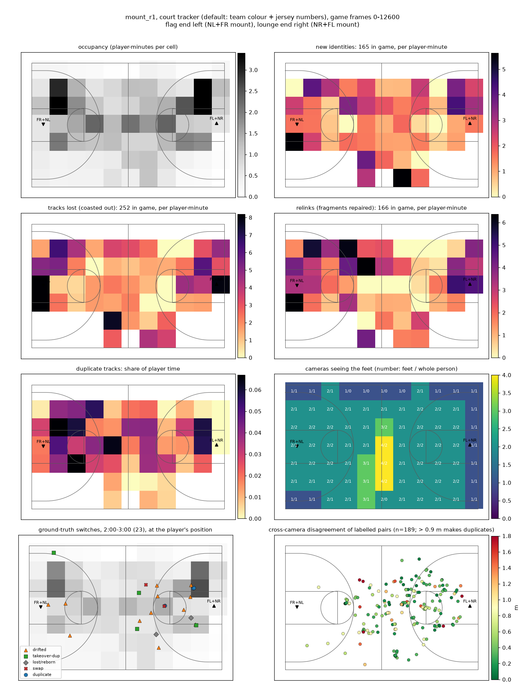
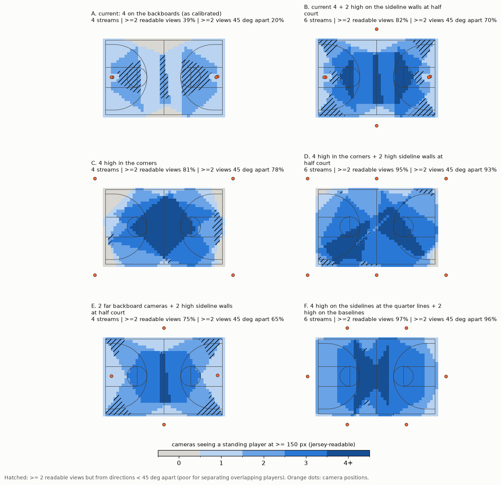

Four-camera basketball court, NVIDIA DeepStream 9.1 Multi-View 3D Tracking (MV3DT), evaluated on a Dell XPS 8960 (RTX 3060 Ti 8 GB) with deployment on a Jetson (AGX Orin 64 GB or Orin Nano Super) in mind. Date: 2026-10-28.
This report describes the pipeline's default configuration: INT8 detector, no display, time-aligned camera streams
(section 2.4). It is causal, as it runs live: every input is available while the game is played, and nothing needs an
operator. All results come from DeepStream runs on the final calibration, which places every camera on its physical
mount (section 5): three runs (js_r1-r3) for the main results, three more with the court tracker running inside
DeepStream (ctj_r1-r3, section 4.6). All court-tracker figures are regenerated with the final code by
scripts/phase8_reevaluate.sh.
1. Summary
Recommendation. Use DeepStream for detection, per-camera tracking and jersey reading, on time-aligned camera streams. Then run the court tracker developed here on its output and report each player by identity (team + jersey number), not by track ID.
| What is reported | Identity IDF1 (3 DeepStream runs x 2 labelled minutes) |
|---|---|
| Court tracker, player identities (Python reference) | 85.3 % (74-96 %) |
| The same, running live inside DeepStream in C++ (3 further runs, section 4.6) | 83.1 % (67-96 %) |
IDF1 here is the share of labelled detections that end up on the output unit matched to the right player. It's measured on hand-labelled ground truth (section 2.3). For reference, MV3DT's own global IDs, as DeepStream delivers them, score 61.2 % (53-72 %) on the same runs.
-
Speed on the 3060 Ti: the pipeline with jersey reading runs at 89-95 fps per camera (real time is 30), and at 91 fps with the court tracker inside it and its evaluation logs. The court tracker itself takes about 0.08 ms per frame in its C++ port (2.1 ms in Python), with identical output (section 4.5).
-
Running live inside DeepStream (section 4.6): the C++ court tracker and the automatic team model send one Kafka message per frame with every player's identity and court position.
-
The camera streams must be time-aligned (section 2.4). The recordings started up to 0.87 s apart. Aligning them raised identity accuracy from 80.9 % to 85.3 % and MV3DT's own from 55.4 % to 61.2 %; with the offsets doubled the court tracker fell to 78.0 %. A live system must align the streams by timestamp.
-
No operator: the two teams are found automatically from torso colour as the game runs and named A and B. From 2:00 to the end of the game, no crop got the other team's name in any of six runs (section 4.4). Each camera's position correction is measured once at installation.
-
Seated spectators are dropped before tracking (section 4.7): 6-8 % of their detections reach the output, at most 2 % with an identity, while all but 0.5 % of player detections do.
-
Still not good enough for reliable per-player statistics. About 15 % of player time is credited to the wrong player or no player. Most of that is a wrong identity (about 11 %), not a missing one (about 4 %; section 4.2).
-
Results vary from run to run. Repeated DeepStream runs of the same configuration give different MV3DT IDs and jersey reads. Per-minute identity IDF1 ranges from 74 % to 96 %, so every number here is an average over three runs.
-
Detector threshold (section 6.1): INT8 with a detection threshold of 0.1 instead of nvinfer's default 0.2 detects 97.2 % of labelled people instead of 94.2 %, for 77.7 % end-to-end identity accuracy instead of 74.2 % (measured with the jersey reader's previous crop scaling).
-
Jetson (estimated from these measurements, section 6.2): four cameras at 30 fps look borderline to feasible on an AGX Orin 64 GB, and not feasible on an Orin Nano Super.
-
Camera placement (section 7): moving the same four cameras from the backboards to high corner mounts would raise the share of the play seen by two cameras at jersey-readable size, from clearly different directions, from 22 % to about 86 %, while framing both baskets for highlight clips (simulated). Six high wall cameras would reach 99 % with two highlight views per basket, but need more compute than these estimates allow at 30 fps.
2. Setup
2.1 Hardware and software
- Ubuntu 24.04, RTX 3060 Ti 8 GB, driver 580, Docker with the NVIDIA Container Toolkit.
-
DeepStream 9.1: container
nvcr.io/nvidia/deepstream:9.1-triton-multiarch, repoNVIDIA/DeepStreamtagv9.1.0.2, appdeepstream-test5-appwith a small patch (court filter, torso objects, jersey log, court tracker). -
Brokers: mosquitto (MQTT, inter-camera tracker messages) and Kafka 4.2.0 (MV3DT metadata).
2.2 Cameras and video
-
Mounting: two camera pairs, each on one apparatus on top of a backboard, 6-10 in apart. NL + FR sit at the left end, NR + FL at the right end. The N cameras look steeply down at the near half; the F cameras look across at the far half.
-
Video: the cameras record 4K; this pipeline uses 1920 × 1080, 30 fps, undistorted transcodes of about 15 minutes, cut so that the four streams are time-aligned (section 2.4). 0:00-6:29 is a game (red vs maroon, 2 referees); after that comes a warm-up, which is out of scope. Times in this report are those of the NL video.
-
NL lost packets: six times during the game (0:48-5:22), NL's 4K stream lost a packet, which leaves about 0.9 s of grey, undecodable frames each time in the transcode (about 5 s of the game in total).
-
Calibration: one 3 × 4 projection matrix per camera, in metres with the origin at centre court, fitted with the cameras on their mounts (section 5).
2.3 Ground truth
Two labelled minutes of the game: 2:00-3:00 and 4:00-5:00. Each has 30 moments, 2 s apart. Every person on court was labelled at each moment, giving about 380 labelled groups per minute. About 325 and 343 detections per minute carry a full identity, across about 10 people per minute (players from both teams, including substitutes).
- Labelling: done by the user on a web page, with the tracker's guess shown but not counted.
-
Scoring: labels attach to detection keys (frame, camera, box), so any tracker that uses the same detections can be scored. They carry over to new DeepStream runs by box overlap, with each camera's frame offset applied (
tools/gt_eval.py). -
Refs: both referees were labelled only as "ref", so referees aren't scored.
- Limit: both minutes have been used for development decisions.
- Held-out minute: 5:00-6:00 was labelled afterwards the same way (30 moments, 424 detections with a full identity, 8 people) and is used only to check results, never to tune (section 4.2).
2.4 Time alignment of the camera streams
The clips used in this report are time-aligned: frame n of every camera shows the same moment. The four cameras were recorded over RTSP into separate files, and the original recordings started up to 0.87 s apart.
How the offsets were measured (tools/sync_check.py, GitHub issue #3):
-
Camera shake: a ball hitting a backboard shakes both cameras on that mount at the same moment. The global image shift between consecutive frames, cross-correlated between the two cameras on a mount, gives NL-FR 26 frames (two hits) and NR-FL 9 frames (two hits).
-
Ball-rim contact: the two mounts are linked by a ball entering the left rim, matched frame by frame in NL and FL (13 frames). A right-rim contact seen by NR and FR confirms the chain (4 frames, as predicted).
-
No drift: the offsets are the same at 2:13, 4:30, 5:24 and 6:07. Each camera's own timing is intact (NR records at 29.83 fps, the others at 30.00; the transcodes place frames by timestamp, so NR stays in step).
-
Not usable: matching the players' own motion between cameras gives biased offsets, because position errors that depend on running direction look like time shifts. Only image events are used.
Why it matters. MV3DT associates people across cameras by comparing their positions at the same frame number,
and the court tracker fuses the cameras' floor positions frame by frame. With the streams out of step, both compare
different moments. Players move at a median 0.8 m/s (2.1 m/s at the 90th percentile; court-tracker positions of
js_r1), so 433 ms apart puts the same player a median 0.36 m apart in two cameras (0.92 m at the 90th percentile).
The court tracker merges two tracks fed by different cameras only if they stay within 0.9 m. The same INT8 pipeline
was run on the original clips, on the aligned ones, and on clips with the offsets doubled (tools/sync_eval.py,
reports/sync_eval.md):
| Clips | Largest offset between cameras with overlapping views | Runs | Court tracker identity IDF1 | End-to-end | MV3DT's own IDs | Foot-point distance, same person and frame (NL-FR / FL-FR / NL-FL) |
|---|---|---|---|---|---|---|
| Aligned (default) | 0 | 3 | 85.3 % (74-96 %) | 83.2 % | 61.2 % | 0.21 / 0.27 / 0.45 m |
| Original | 433 ms (NL-FL, FL-FR) | 3 | 80.9 % (70-88 %) | 79.0 % | 55.4 % | 0.64 / 0.45 / 0.60 m |
| Offsets doubled | 867 ms (NL-FL, FL-FR) | 1 | 78.0 % (72-84 %) | 76.0 % | 54.9 % | 0.61 / 0.62 / 0.70 m |
Tolerance. With up to about 0.4 s between cameras that see the same area, the court tracker lost about 4 points of identity accuracy and MV3DT about 6; at about 0.9 s the court tracker lost about 7. The court tracker tolerates offsets better than MV3DT because identities rest mostly on jersey numbers and team colour, which each camera supplies on its own; positions, speeds and distances, however, are averaged across cameras that show different moments. Differences of 2-3 points are at the edge of the run-to-run spread, and the doubled-offset case is a single run. The three runs on the original clips didn't shut down at the end of the clips (DeepStream never handled NL's end of stream); they were stopped after their recordings were complete, so their speed isn't reported.
How the pipeline aligns them now, and what a live system needs. Here the alignment comes entirely from the input files, cut with the measured offsets. DeepStream's muxer groups one frame per camera into each batch, but with file sources it simply takes the next frame of each file, without looking at capture time. Live cameras can't be pre-cut: they need synchronised clocks (NTP or hardware sync), and the muxer must pair frames by capture timestamp, not by arrival order. That hasn't been built or tested here (section 9).
3. Pipeline
-
Detection: PeopleNet 2.6.3, INT8 (TensorRT calibration made with the deployment TensorRT version), 960 × 544, every frame, batch of 4 cameras, detection threshold 0.1 (section 6.1). Boxes are clustered by NMS (IoU 0.5), keeping at most 20 per camera frame; the cap applies before the court filter and keeps out some of the seated spectators FR sees (GitHub issue #1).
-
Court filter (custom probe): drops detections whose floor point lies outside the court plus 0.75 m (benches, crowd, scorer's table).
-
MV3DT (NvDCF tracker with the single-view 3D person model, multi-view association over MQTT). Provides per-camera tracklets and 3D foot positions.
-
Jersey reading inside DeepStream:
- torso objects are taken from player boxes at least 150 px tall
- a text detector (PP-OCRv4 det, 384 × 480) finds text boxes
- a digit recogniser (PP-OCRv4 rec, 48 × 64) reads 1-2 digit numbers
- both scale their crops bilinearly (
scaling-filter=1); nvinfer's default scaled them like nearest-neighbour, which gave fewer reads (GitHub issue #2)
-
Court tracker (C++ probe inside DeepStream,
apps/courttrack; Python referencetools/world_tracker.py). A court-plane Kalman tracker over MV3DT's foot points, fully causal: its output is final as soon as it's made.-
camera position bias: each camera's foot points carry a constant offset (mainly NL −0.24 m and NR +0.24 m along the court). It is measured once at installation from detections of the same person in two cameras (
tools/calib_bias.py), stored in each camera's calibration file ascourtTrackerBias_m, and subtracted before tracking. The stored values were measured on two runs (s_int8cal_r1,r2) that are not used for any result here, and must be re-measured whenever the calibration or the detector changes. -
seated spectators: detections whose box bottom and MV3DT foot point disagree in the way seated people do are dropped before tracking (section 4.7)
-
matching: direction-aware measurement noise and a likelihood cost
-
identity cues: team colour from the online team model (below) and jersey numbers, where identity = team + number
-
identity output: an online roster and a per-player appearance model
- identity freshness: identities come from recent reads (10 s), and a track splits when a majority of its recent reads show another number
-
-
Online team model (
tools/online_teams.py, C++apps/courttrack/online_teams.cpp), with no operator:-
each court track keeps a colour summary (hue x saturation histogram) of its torso crops from FL, FR and NR; every 5 s, the summaries of the last 3 minutes are clustered into three groups: two teams and everyone else
-
first model (after 30 s): the two clusters whose tracks get the most jersey reads per detection are the teams (players' numbers are read, referees' and spectators' hardly ever); before it, no detection has a team label
-
later models start from the previous centres, and the team names A and B stay with the clusters nearest the previous team centres. The read-rate rule decides again only if that match is ambiguous (another cluster within twice the squared distance), which didn't happen during the game after the first model in any run here. So identities (A:23) stay stable, and a change in who gets read (for example livelier spectators near the end of a game) can't move a team name to another cluster.
-
everything outside the two team clusters, referees included, gets no team label
- per-camera colour correction is learned as the game runs
- Output: one JSON message per frame on Kafka (section 4.6).
-
4. Results
4.1 Speed (RTX 3060 Ti)
| Run | fps per camera | GPU use (median) | GPU memory peak |
|---|---|---|---|
| js_r1 | 89.0 | 89 % | 2.35 GB |
| js_r2 | 94.3 | 90 % | 2.36 GB |
| js_r3 | 94.8 | 90 % | 2.34 GB |
No display or annotated video (reports/deploy_variants_detection.md). With the court tracker running inside the
pipeline and its evaluation logs written to this PC's hard disk: 90.7-91.4 fps per camera (section 4.6).
- Jersey reader, per crop: text detector 0.36 ms, recogniser 0.16 ms (TensorRT FP16).
- Court tracker: 2.1 ms per frame on one core of an i7-13700 (Python). The C++ port takes 0.08 ms per frame on the same inputs (section 4.5).
4.2 Accuracy
| Result (3 runs x 2 labelled minutes) | |
|---|---|
| Identity IDF1 | 85.3 % (mean); per run and minute 95, 74, 93, 80, 96, 74 % |
| End-to-end (correctly identified / all labelled detections) | 83.2 %; 97.5 % of labelled people detected |
| Identity switches | 21 per labelled minute (mean) |
| Held-out minute 5:00-6:00 (same 3 runs) | identity IDF1 88.6 % (89, 89, 88 %); end-to-end 87.7 %; 98.9 % of labelled people detected¹ |
¹ The held-out labels were made on run js_r1's detections, so that run detects 100 % of them by construction; the other two runs detect 98.1 % and 98.6 %. The held-out minute was not used for any setting in this report.
- Wrong number, other (5.3 %): misreads, and identities established from too few reads.
-
Wrong number carried over from another player (4.3 %): a track swaps players and keeps the old identity until enough new reads arrive. Reads are sparse: a given player is read only every few seconds.
-
Unidentified (3.4 %): almost all of it (3.0 %) on tracks with readable crops and reads that never reached an identity.
-
Wrong team with the right number (1.2 %): on the numbers both teams wear (1 and 3).
- Missed by the tracker (0.5 %): small; part of it is the seated-spectator rule (section 4.7). Detection and court filtering aren't the bottleneck.
Run-to-run variation. Repeated DeepStream runs of the same configuration detect nearly the same boxes (97.6-98.3 % of one run's boxes are found again in another), but the MV3DT IDs, per-camera tracklets and the jersey reads attached to them come out differently, most likely because the order in which cameras exchange tracker messages varies. Every number here is therefore a mean over three runs.
4.3 Where on the court

Over the whole game (js_r1):
| Zone | New identities per player-minute | Tracks lost per player-minute | Time with a duplicate track |
|---|---|---|---|
| Interior | 0.9 | 1.5 | 2.5 % |
| Within 1.5 m of a sideline | 2.7 | 6.0 | 0.4 % |
| Within 1.5 m of a baseline | 3.9 | 6.2 | 0.0 % |
| Left-end third | 1.2 | 2.1 | 3.9 % |
| Right-end third | 1.2 | 2.5 | 1.2 % |
-
Lines: tracks are lost about four times as often near the lines as in the interior. Players leave the court there, and often only one camera sees them.
-
Ends: the two ends are similar in new identities and lost tracks; the left end has more time with a duplicate track.
4.4 Team labels
The online team model's labels were checked crop by crop over the whole game against reference colour labels (a
colour clustering of the whole game with clusters named by hand, used only for this check; tools/team_label_check.py,
reports/team_label_check.txt). Six runs: the three main runs and the three ctj runs (Python reference).
- Teams: maroon was A and red B in every run.
-
First minute: no labels before the first model at 0:30. Between 0:30 and 1:00, 7-14 % of red crops were labelled A; between 1:00 and 2:00, up to 3 crops per run.
-
2:00 to the end of the game (6:29): no crop got the other team's name, and at most 7 referee crops per run got a team label.
-
Unchecked: the model also gives team names to about 5,700-6,400 crops per run that the reference left unlabelled, mostly A. It hasn't been checked whether those are players or people beside the court.
-
Assumption: the first model's read-rate rule assumes players' numbers are read clearly more often than anyone else's shirt in the first 30 s of a game. From 2:00 to the end of the game the team clusters got reads on 2.5-5.4 % of detections, the third cluster on a median of 0.9-2.3 % per run. In three runs the third cluster's highest rate (3.0-3.3 %) briefly exceeded a team cluster's lowest; the rule isn't applied again after the first model, so this didn't move a team name.
4.5 C++ port of the court tracker
apps/courttrack is a C++ port of the court tracker (courttrack.cpp) and of the online team model
(online_teams.cpp), for use inside the DeepStream pipeline. Both were checked by replaying the exact per-frame
inputs recorded in the live runs (apps/courttrack/ct_replay and the Python reference, tools/courttrack_export.py
live):
-
Same output: on
ctj_r1-r3, the C++ and the Python replays reproduce all of about 528,000-529,000 live detection identities per run (the whole recording). This needs the colour statistics summed in a fixed order, fused multiply-add disabled in the C++ builds (-ffp-contract=off, which matters on the Jetson's ARM CPU) and NumPy's percentile formula matched exactly. -
Speed: 0.08 ms per frame on one core of the i7 (replay of
cts_r1, an earlier live run), against 2.1 ms for the Python version. The slowest frames, 3.5-4.8 ms, are the team model's re-clustering every 5 s.
4.6 Running inside DeepStream
The court tracker runs live in the pipeline (scripts/run_mv3dt.sh with COURTTRACK=1; probe
apps/courttrack/courttrack_probe.cpp, after the jersey reader):
-
Inputs: MV3DT's world foot points, the court filter (0.3 m margin), the stored camera bias, the jersey reads of the same frame, and torso colour histograms. Every 3rd frame, the torso of each good crop (FL, FR, NR) is cut out of the frame with NVIDIA's
NvBufSurfTransforminto a 32 × 48 tile and its hue x saturation histogram computed on the CPU. This works the same way on a Jetson. -
Processing: once all four cameras of a frame have arrived, the online team model labels the crops, the court tracker steps, and the team model learns from the tracker's assignment.
-
Output: one JSON message per frame on its own Kafka topic (
courttrack) with, per player: court track id, identity (e.g.A:23) and team, position and velocity on the court, whether it was seen this frame or predicted, how many cameras saw it, and the detections it came from (camera + MV3DT object id). The per-camera messages are unchanged. Consumers should key on the track id: a track's identity can change (when first established, or after a swap is detected), and a briefly unseen player is kept with a predicted position for up to 2 s. -
Logs for evaluation: the identity of every detection (CSV) and the tracker's inputs, which
ct_replayand the Python reference can replay.
Checked on three full-game runs (ctj_r1-r3):
| Result | |
|---|---|
| C++ and Python replays of the recorded inputs | identical to the live output (all of about 528,000-529,000 detection identities per run) |
| Identity IDF1, live | 83.1 % (67-96 %); end-to-end 81.2 % (97.6 % of labelled people detected) |
| Python reference on the same runs (Kafka output, OpenCV histograms) | 82.6 % |
| Pipeline speed with the court tracker | 90.7-91.4 fps per camera, with the evaluation logs written to this PC's hard disk |
| Court tracker + team model, in the pipeline ¹ | 0.21-0.22 ms mean, 1.8-2.0 ms p99, 13-16 ms max per frame |
| Torso histograms, in the pipeline | 1.7 ms mean per four-camera batch (every 3rd frame) |
| Kafka messages | 26,935 per run, none failed |
-
Live vs Python reference: about the same score (83.1 % against 82.6 %; 3 run-minutes better by 1-3 points, 1 worse by 3, 2 within half a point). The live pipeline computes the torso histograms differently (NV12 frames scaled to small tiles, against OpenCV on full-resolution frames); the team model learns from whichever it gets.
-
Duplicate ids: MV3DT occasionally gives two different people the same object id in one camera and frame. Everything downstream is keyed by (frame, camera, id), so only the first is kept. ¹ Measured on two later live runs (
ctO2_r1,ctpr_r1): the three runs above had the app compiled without optimisation (NVIDIA's sample Makefile sets none) and took 0.91-0.94 ms mean, about 9.5 ms p99 and 54-66 ms max. Both later runs' identities are again reproduced exactly by the C++ and Python replays. -
Speed in the pipeline: 0.2 ms per frame against 0.08 ms replayed alone (CPU shared with DeepStream's threads). The slowest frames are the team model's re-clustering (every 5 s, on the probe's streaming thread). Time per frame follows the number of people: highest in the warm-up after the game. Finished tracks that no re-link can pick are dropped as the game goes (
Tracker::prune, identities unchanged), so memory stays bounded. -
Logging: the evaluation logs are written to this PC's hard disk, which stalls at times; they would be off in deployment.
4.7 Seated spectators
The labels include crops of people who aren't players (338 detections in the three main runs). Almost all of them are
spectators in the front-row seats, seen by FR (310 of the 338), which looks across the court at them
(tools/nonplayer_eval.py, reports/nonplayer_output.md).
-
The problem: their boxes end at the line, so the court filter keeps them. MV3DT's body model assumes a standing person, so it places their feet about 2 m inside the court, among the players, where they could take players' identities.
-
The rule: for a seated person, the box bottom projected onto the floor lands at their seat, at or just outside the line, while MV3DT puts the feet 2 m further in. For players the two agree closely. A detection is dropped before tracking when its two foot points are more than 1 m apart and its box-bottom point is less than 0.6 m inside the lines (boxes cut by the bottom image edge are never dropped). On the labelled detections of the main runs this drops 93.5 % of the spectators' detections and 0.5 % of the players'. No pose model is needed; both points are already available, in Python and in the DeepStream probe.
| Labelled detections | Spectators in the output | Spectators with an identity | Players in the output |
|---|---|---|---|
| Python reference (main runs) | 6 % (19 of 338) | 0 % (0) | 99.5 % |
Live in DeepStream (ctj runs) |
8 % (26 of 332) | 2 % (7) | 99.6 % |
The rule's thresholds were set on this venue's front row and should be checked at other venues.
5. Calibration
The final calibration places each camera where it physically is: the pairs on their backboard apparatus.
-
Line tracing: each camera's court lines were re-traced automatically from a player-free median image (
tools/court_refine.py). This replaced hand-traced lines; on FL those had followed the lettering and the logo instead of the paint, and its overlay was visibly rotated (spotted by the user). -
Joint fit on the mounts (
tools/calib_mount.py): all four cameras are fitted together, with each far camera held within 0.25 m per axis of its partner (FL with NR, FR with NL) and the standard HS/NCAA markings. The court's length and width are fitted.
| Camera | Court-line fit error | Position (x, y, z), m | Distance to partner |
|---|---|---|---|
| NL | 1.75 px | (−9.41, 0.05, 3.81) | — |
| FR | 1.88 px | (−9.66, 0.02, 4.06) | 0.35 m to NL |
| NR | 2.28 px | (9.57, 0.02, 4.05) | — |
| FL | 3.02 px | (9.82, 0.19, 4.16) | 0.33 m to NR |
-
The constraint costs little: fitted without the mount constraint, the errors are 1.68, 1.80, 2.05 and 2.41 px. FL's larger error comes mostly from its far sideline, which runs along the edge of its image.
-
Court size: fitted at 70.3 × 45.1 ft. All tools read it from
tools/court.py. -
Single source of truth: the camera files are in
datasets/gym/camInfo, including the court tracker's camera bias (section 3). Earlier versions are archived beside them, and each run keeps the copy it used incamInfo_used/. -
Independent check: the 3-point arc (19.75 ft) wasn't used in the fit, yet it lands on the painted arc (FL shown below).

Position consistency between cameras. For the same labelled person at the same moment, MV3DT foot points from two
cameras differ by a median 0.27-0.33 m per run and minute (7-12 % of pairs over 0.9 m; 1,009 pairs over the three
main runs; tools/xcam.py). The error runs mostly along each camera's line of sight (spread 0.54 m along it, 0.42 m
across). It comes from estimating feet out of boxes (posture, boxes cut by the frame edge), not from the calibration.
6. Deployment options: measured on the 3060 Ti, estimated for Jetson
6.1 Measured: INT8 detection threshold
Both thresholds were run three times on the time-aligned clips, without display, and scored on the ground truth.
End-to-end counts correctly identified labelled detections over all labelled detections, so people the detector
misses count as errors (reports/deploy_end_to_end.md, reports/deploy_variants_detection.md). These six runs were
made before the jersey crops were scaled bilinearly (section 3), so their identity scores are lower than the main
results; the comparison is about detection, which the jersey reader doesn't affect.
| INT8 detector | fps per camera | GPU use | Labelled people detected | Identity IDF1 (detected) | End-to-end identity |
|---|---|---|---|---|---|
| threshold 0.2 (nvinfer default) | 95.6-96.2 | 88-89 % | 94.2 % | 78.5 % | 74.2 % (57-88 %) |
| threshold 0.1 (default here) | 93.8-96.9 | 88-89 % | 97.2 % | 79.9 % | 77.7 % (67-88 %) |
-
The lower threshold finds more of the labelled people at the same speed, and the people it adds are identified about as well as the rest, so the end-to-end gain (3.5 points) comes mostly from detection.
-
Calibration: NVIDIA's published INT8 calibration file was made with an older TensorRT (10.3), which names the activation layers differently; with it, most layers fell back to full precision. The runs here use a calibration made with the deployment TensorRT version (10.16) on 400 frames from the video (
tools/int8_calibrate.py). A Jetson needs a calibration made with its own TensorRT version, and the camera bias re-measured with it (section 3). -
INT8 accuracy was checked against FP16 on this pipeline in GitHub issue #1.
6.2 Estimated for AGX Orin 64 GB and Orin Nano Super
These are estimates: the 3060 Ti measurements scaled by hardware ratios. Nothing has been run on a Jetson. Device specifications are NVIDIA's published figures as known at the time of writing; check them against current spec sheets before buying.
| AGX Orin 64 GB | Orin Nano Super 8 GB | |
|---|---|---|
| GPU | 2048 CUDA cores, 64 tensor cores | 1024 CUDA cores, 32 tensor cores |
| Deep-learning accelerators (DLA) | 2 | none |
| AI performance (INT8, sparse, as quoted) | up to 275 TOPS | up to 67 TOPS |
| CPU | 12-core Cortex-A78AE | 6-core Cortex-A78AE |
| Memory / bandwidth | 64 GB, 205 GB/s | 8 GB, 102 GB/s |
| Hardware video encoder | yes | no |
| Hardware decode, H.265 (approximate) | about 7 × 4K30 or 22 × 1080p30 | about 2 × 4K30 or 11 × 1080p30 |
| Power | 15-60 W | 7-25 W |
| Price (developer kit, approximate) | about US$2,000 | about US$250 |
Assumed relative speed on this workload: the Orin Nano Super 5-8 times slower than the 3060 Ti, the AGX Orin 64 GB 2.5-3.5 times slower (twice the Nano's GPU cores and memory bandwidth). The 3060 Ti figures are the threshold 0.1 runs of section 6.1; the main runs, with bilinear jersey crops, measured 89-95 fps per camera.
| Configuration (INT8, detector every frame, no display) | 3060 Ti (measured) | AGX Orin 64 GB (estimate) | Orin Nano Super (estimate) |
|---|---|---|---|
| fps per camera with 4 cameras | 95 | 27-38 | 12-19 |
| fps per camera with 6 cameras | 63 | 18-25 | 8-13 |
| GPU share of one 30 fps camera | 7 % | 17-25 % | 35-56 % |
What this means:
-
Orin Nano Super: four cameras at 30 fps don't look feasible. What remains:
- two cameras
- or a lower camera frame rate. 15 fps was tested on the 3060 Ti (GitHub issue #5; 3 runs, every frame detected, frame-counted settings halved): identity accuracy 82.9 % and end-to-end 79.6 %, against 84.4 % and 82.4 % at 30 fps (4 runs), with MV3DT's own IDs clearly worse (53 % vs 62 %). But each frame costs about 20 % more (74-75 fps per camera instead of about 90), so four 15 fps cameras would run at about 9-15 fps on the Orin Nano Super (scaled the same way): not enough. The jersey reader isn't the cause: reading each player every 7th frame instead of every 3rd lowered GPU use (95 % to 89 %) but not the speed, and cost accuracy (81.1 % identity, 78.1 % end-to-end). The cause hasn't been identified.
-
AGX Orin 64 GB: four cameras at 30 fps look borderline to feasible.
- Six cameras at 30 fps don't look feasible on the GPU alone.
-
Its two DLAs could take the INT8 detector off the GPU (DeepStream supports this), but their throughput for this model must be measured.
-
4K decoding: four 4K streams for highlight clips (section 7) are within its decoder, not the Orin Nano Super's.
-
Court tracker: inside the pipeline on the 3060 Ti PC it takes 0.2 ms per frame on average, with p99 about 2 ms and occasional frames up to 16 ms (the team model's re-clustering; section 4.6). The Orin's cores are slower, so the worst frames need measuring on the device (GitHub issue #6); moving the re-clustering to a worker thread is the fix if they approach the 33 ms frame period.
-
Software: DeepStream 9.1, which this pipeline uses, needs JetPack 7.2 on Orin. MV3DT first appeared in DeepStream 8.0, and the newest DeepStream for JetPack 6 is 7.1, so a JetPack 6 device can't run the pipeline. On this PC, with MV3DT's multi-view association off (single-view 3D tracking only, as DeepStream 7.1 would offer), end-to-end accuracy fell from 82.4 % to 74.0 % (3 runs).
-
Brokers: MV3DT exchanges messages over MQTT between its per-camera trackers; on a single device the broker runs locally. Kafka is only needed if metadata leaves the device.
-
Time alignment: the streams must be batched by capture timestamp (section 2.4).
Recommendation.
- For four cameras at 30 fps (current or corner layout), choose the AGX Orin 64 GB.
-
The Orin Nano Super doesn't look feasible for four cameras, even at 15 fps (estimate above). It would need fewer cameras, or the extra per-frame cost at 15 fps explained and removed (GitHub issue #5).
-
Buy or borrow with JetPack 7.2 (DeepStream 9.1), as above.
- Before buying, measure on the device:
- fps per camera (INT8, no display)
- DLA throughput (AGX Orin)
- decode capacity
- accuracy, re-scored with
tools/multi_eval.pyafter re-calibrating INT8 for the device's TensorRT
7. Camera placement and quantity
The current cameras sit at backboard height and see players mostly from the side. That is the main reason tracks
swap in close encounters (section 4.2). The 4K streams may also be used to cut highlight clips, so the cameras must
cover where the action happens, not just the floor. This section compares candidate layouts with a camera-layout
simulator (tools/camera_layout.py) and sets them against compute.
7.1 Method
-
Model: each camera is a 1920 × 1080 pinhole at a given position, aim point and lens field of view, over the fitted court. For each 0.5 m floor cell and a standing 1.8 m player, it computes:
- which cameras see the whole player
- the player's height in pixels: at least 150 px is readable for the jersey reader, at least 80 px detectable
-
how steeply each camera looks down, and the floor length hidden behind a player ("shadow"; shorter means fewer occlusions)
-
the largest angle between two readable cameras' viewing directions. At least 45° apart is needed to triangulate positions and separate players who overlap in one view.
-
Where the action is: every floor cell is weighted by the time players spent there in the game (court-tracker positions of js_r1). "Share of the action" counts where play happened; "area" counts the floor equally.
-
Highlight framing: per basket, a camera frames the scene if players' feet and heads within 3 m of the rim and the ball up to 1.5 m above the rim are all in its image. Reported with the rim's width in pixels on the camera's 4K frame and the view: end-on (less than 30° from the court's long axis), corner, or sideline (more than 60°).
-
Validation: for the current cameras, real detection boxes measure 0.89-1.01 times the predicted standing height (median per camera, js_r1, game frames; FL lowest). So the model's pixel sizes are realistic, if somewhat generous for FL.
-
Choice of lenses and aims: each new camera's lens (50-95° horizontal) and aim point are chosen by a search that maximises the share of the action seen by two readable cameras at least 45° apart, plus a credit for framing each basket (and for a second view of it from another direction). Existing cameras stay as calibrated.
-
Venue assumptions, to be replaced by measurements: walls 2 m beyond the lines, wall mounts up to 6 m high. Room dimensions and ceiling height weren't available.
7.2 Results

| Layout (mounts 6 m high) | Streams | ≥2 readable views ≥45° apart (area / action) | No readable view (area / action) | Baskets framed for highlights (view, rim width in 4K) |
|---|---|---|---|---|
| A. Current: 4 on the backboards | 4 | 20 % / 22 % | 6 % / 1 % | each by one far camera, end-on, 98-99 px |
| E. Keep the 2 far backboard cameras, move 2 to the sideline walls at half court | 4 | 57 % / 81 % | 3 % / 0 % | each end-on 98-99 px + corner 73-74 px |
| C. 4 high in the corners | 4 | 64 % / 84 % | 5 % / 3 % | each sideline 134-143 px + end-on 69 px |
| B. Current 4 + 2 on the sideline walls at half court | 6 | 61 % / 83 % | 2 % / 0 % | each end-on 98-99 px + corner 74 px |
| D. 4 corners + 2 on the sideline walls at half court | 6 | 85 % / 95 % | 2 % / 1 % | each sideline 134 px + end-on 57-69 px |
| F. 4 on the sideline walls at the quarter lines + 1 per baseline wall | 6 | 88 % / 99 % | 4 % / 0 % | each sideline 121 px + corner or end-on 63-77 px |
The table and figure are regenerated by python -m tools.camera_layout into reports/camera_layouts.md and
reports/figures/camera_layouts.png.
-
Highlights cost some tracking coverage with four cameras: aimed for tracking alone (no highlight credit in the search,
HL_WEIGHT = 0), the four corner cameras reach 94 % of the action with two well-separated views, but frame neither basket; aimed to frame both baskets too, they reach 84 %. With six cameras the cost disappears (layout F: 99 %). -
Where the play is, coverage is better than the area figures suggest: the cells without two good views are mostly cells where little play happened.
Mounting height (reports/camera_layouts_height.md):
| Height | C: ≥2 readable views ≥45° apart (area / action) | C: no readable view (action) | F: ≥2 readable views ≥45° apart (area / action) | F: baskets framed |
|---|---|---|---|---|
| 4.5 m | 73 % / 86 % | 2 % | 93 % / 99 % | each corner 78-79 px + end-on 59-70 px |
| 5 m | 72 % / 86 % | 2 % | 93 % / 99 % | each corner 77-79 px + end-on 59-70 px |
| 6 m | 64 % / 84 % | 3 % | 88 % / 99 % | each sideline 121 px + corner or end-on 63-77 px |
| 7 m | 61 % / 80 % | 3 % | 85 % / 96 % | each sideline 117 px + corner 96 px |
In layout C, every height keeps both baskets framed from a sideline view (128-143 px) and an end-on view (60-69 px).
- Lower mounts: players appear larger, so slightly more of the court is readable.
- Higher mounts: steeper views, which shrink the area hidden behind each player.
- For the corner layout, about 4.5-5 m is the best balance: 86 % of the action seen by two well-separated cameras, 2 % unreadable, both baskets framed from two directions.
7.3 Compute per camera stream
| Platform (INT8 detector every frame, no display) | GPU per 30 fps stream | 4 streams | 6 streams |
|---|---|---|---|
| RTX 3060 Ti | about 7 % (measured) | about 28 % | about 42 % |
| AGX Orin 64 GB | about 17-25 % (estimate) | about 70-100 % | about 105-150 % (not feasible on the GPU alone) |
| Orin Nano Super | about 35-56 % (estimate) | about 140-220 % (not feasible) | not feasible |
-
Basis: the measured INT8 runs (about 95 fps per camera at 88-89 % GPU use, section 6.1). The estimates assume the AGX Orin 64 GB is 2.5-3.5 times slower and the Orin Nano Super 5-8 times slower. Neither assumption has been measured.
-
DLAs: on the AGX Orin, running the detector on its DLAs would free GPU time; not measured yet (GitHub issue #4).
-
Jersey reading scales with the number of readable players rather than cameras. More cameras can be held to the same read budget.
-
Inter-camera tracker messages (MQTT) grow with the number of camera pairs. Six cameras is modest.
-
The cameras already record 4K; this pipeline uses a 1080p transcode. The detector runs at 960 × 544 either way. Feeding the 4K streams costs mainly decoding (about 4× the decode work); highlight clips need the 4K recordings, jersey reading doesn't.
-
Coverage: with the current cameras, the simulator shows readable coverage unchanged (94 % of the court by at least one camera). Wherever a camera sees a player at all, the player is already at least 150 px tall at 1080p.
-
Reads (measured offline, GitHub issue #2): the jersey reader was replayed outside DeepStream on the main runs' own boxes, with torsos cut once from the 1080p frames and once from the matching 4K frames at twice the resolution (
tools/hires_jersey.py). With the same smooth scaling for both, the 4K crops gave 6 % fewer reads at the same share of misreads, and a lower court-tracker identity score (79.2 % vs 84.0 %, 3 runs × 2 minutes). Reading jerseys from 4K is therefore not pursued.
-
7.4 Proposal
-
Same compute as today (4 streams): move to layout C, four corner cameras at about 4.5-5 m.
-
Lenses and aims as chosen by the search (about 60-70° horizontal at 6 m), so that each basket is framed side-on from its near corner and end-on from a far corner.
-
The share of the action seen by two well-separated readable cameras rises from 22 % to about 86 %, and both baskets are framed for highlight clips from two directions (rim about 140 px wide from the sideline, 60 px end-on, in 4K).
-
Views become steeper (median look-down 15° → 20-22°), and the area hidden behind players shrinks from about 9 m to about 6 m.
-
With four streams it needs an AGX Orin 64 GB at 30 fps (section 6.2).
- If six streams are affordable, use layout F: four sideline cameras at the quarter lines plus one per baseline, at 4.5-5 m: 99 % of the action covered, both baskets framed from two directions. Six streams at 30 fps exceed an AGX Orin's GPU by the estimates in section 6.2, unless its DLAs take the detector or the cameras run at a lower frame rate (both untested).
-
-
If cameras can't move: keep the far backboard cameras and move the two near ones to the sideline walls at half court (layout E, still 4 streams): 81 % of the action, and the backboard cameras keep the best end-on basket views (rim about 98 px).
-
Whatever the layout:
- use identical cameras with locked exposure and focus, recording 4K for clips
- synchronise the cameras' clocks and batch the streams by timestamp (section 2.4)
- avoid pointing at windows or bright lights
- calibrate with the mount positions as a constraint, as in section 5, ideally with measured court dimensions
Caveat. These are geometric coverage figures, not tracking accuracy or clip quality. Before buying hardware, the best check is a temporary installation (stands or poles at the corners) for one session, run through the same pipeline and scored on newly labelled ground truth.
How the professional systems compare (general knowledge, not verified here):
-
Basketball: NBA optical tracking (SportVU, Second Spectrum, now Hawk-Eye) uses many fixed cameras high in the arena rafters.
-
American football: the NFL uses RFID chips in the shoulder pads.
-
Identity: in all of these, operators assign identities, correct swaps live and review data after games, with rosters and substitutions from official feeds.
-
What this means here: high mounts and roster and substitution input are the parts worth borrowing; both fit this project's real-time setup.
8. Limitations
- Small ground truth: two minutes of one game on one court, with 10 players and refs not scored.
-
Held-out data is one minute: both tuning minutes informed development decisions, including the online team model's settings. The held-out minute 5:00-6:00 (88.6 % identity IDF1) is untouched by tuning but is a single minute of the same game.
-
Run-to-run variation: per-minute identity IDF1 ranges from 74 % to 96 % across DeepStream runs. Three runs narrow it, but differences under about 2 points aren't reliable.
-
Sensitivity: tracking decisions amplify tiny input changes (a few centimetres of camera bias, a few hundred duplicate detections in a game), which shows up as run-to-run spread.
-
One game, one venue: the online team model, the roster inferred online and the seated-spectator rule's thresholds are tested on this one game. Other courts, lighting and kits are untested.
-
Time alignment: the offsets were measured on this recording. A live system must keep the streams aligned by timestamp; the tolerance in section 2.4 rests on three runs per setting and one run with doubled offsets.
-
Court size and venue: the court's length and width are fitted, not measured. The camera-placement study assumes wall distances and mounting heights.
9. Next steps (prioritised)
-
Measure on the target Jetson (AGX Orin 64 GB, or Orin Nano Super with fewer cameras or 15 fps).
- Re-calibrate INT8 for its TensorRT version and re-measure the camera bias (README, "INT8 on a new device").
-
Build and test pairing the live camera streams by capture timestamp (section 2.4; the clips here were pre-aligned).
-
Measure fps per camera without display, and DLA throughput (AGX Orin; issue #4).
-
Measure the court tracker's worst-frame time in the pipeline; move the team model's re-clustering to a worker thread if it exceeds the frame period (issue #6).
-
Check that the pipeline shuts down at end of stream (section 2.4: it didn't on the original clips here; issue #7).
-
Re-score accuracy with
tools/multi_eval.pyandtools/courttrack_export.py live. - Trial the corner layout (C) for one session (issue #9) with temporary mounts at about 4.5-5 m, label a minute and compare with the current layout, including the highlight framing of both baskets.
-
More reads per player where it matters (issue #8). Re-read tracks for a second or two after a close encounter, and tracks without an identity.
-
Label a third minute (5:00-6:00 is still unused) for a clean held-out score before any final claims.
- Use the official roster (numbers per team, available for real games): reject reads of numbers on neither roster, and settle the team of a number only one team wears. The roster can't say which colour is which team, but the tracker can learn that from which numbers each colour cluster is read with. This also targets the wrong-team errors on shared numbers.
10. How to reproduce
./scripts/brokers.sh start
python -m tools.make_clips --start 0 --seconds 898 --offsets NL=26,FL=13,NR=4 --name gym_sync # aligned clips
for r in s_int8cal_r1 s_int8cal_r2; do ./scripts/run_default.sh $r; done # camera bias (not scored)
~/.venvs/mv3dt/bin/python -m tools.calib_bias s_int8cal_r1 s_int8cal_r2 --write
for r in js_r1 js_r2 js_r3; do ./scripts/run_default.sh $r; done # main runs ²
PGIE_PRECISION=int8 PGIE_THRESHOLD=0.1 ./scripts/phase8_courttrack_live.sh ctj_r1 ctj_r2 ctj_r3 # section 4.6
DATASET=gym PREFIX=j_ ./scripts/phase7_deploy_variants.sh int8t10_r1 int8t10_r2 int8t10_r3 # section 2.4, original clips
DATASET=gym_sync2x PREFIX=j2x_ ./scripts/phase7_deploy_variants.sh int8t10_r1 # section 2.4, offsets doubled
./scripts/phase7_deploy_variants.sh int8_r1 int8_r2 int8_r3 int8t10_r1 int8t10_r2 int8t10_r3 # section 6.1 ¹
JOBS=8 ./scripts/phase8_reevaluate.sh # every court-tracker table and figure in this report
python -m tools.make_clips --start 0 --seconds 898 --offsets NL=26,FL=13,NR=4 --step 2 --name gym_sync15
./scripts/phase9_fps15.sh # section 6.2, cameras at 15 fps (scored as in GitHub issue #5)
~/.venvs/mv3dt/bin/python -m tools.variant_eval --ref s_int8_r1 --runs s_int8_r2 s_int8_r3 s_int8t10_r1 s_int8t10_r2 \
s_int8t10_r3 js_r1 js_r2 js_r3 ctj_r1 ctj_r2 ctj_r3 --md reports/deploy_variants_detection.md
~/.venvs/mv3dt/bin/python -m tools.camera_layout --validate js_r1 --occupancy js_r1 \
--md reports/camera_layouts.md --heights 4.5,5,6,7 --heights-md reports/camera_layouts_height.md
~/.venvs/mv3dt/bin/python -m tools.hires_jersey read s_int8t10_r1 s_int8t10_r2 s_int8t10_r3 --interp area --tag _area
~/.venvs/mv3dt/bin/python -m tools.hires_jersey read s_int8t10_r1 s_int8t10_r2 s_int8t10_r3 --interp nearest --tag _nearest --min-h 150
~/.venvs/mv3dt/bin/python -m tools.hires_jersey score s_int8t10_r1 s_int8t10_r2 s_int8t10_r3 \
--files jersey.npz,jersey_1080p_h150_nearest.npz,jersey_1080p_h150_area.npz,jersey_4k_h150_area.npz \
--md reports/hires_jersey.md # section 7.3 (offline reader replay)
python3 reports/build_page.py # web page version
Each run is followed by the jersey-read conversion and appearance extraction (in the scripts). The original and
doubled-offset clips of section 2.4: make_clips without --offsets, and with --offsets FL=13,NR=22,FR=26.
¹ The section 6.1 runs were made with nvinfer's default crop scaling for the jersey reader; repeated now, they would
use the bilinear scaling that is the default in apps/jersey/config_sgie_text{det,rec}.txt.
² The main runs were made with phase7_deploy_variants.sh js_r1 js_r2 js_r3 before run_default.sh existed, with
nvinfer's implicit NMS fallback (IoU 0.5, top 20) instead of the same settings written out; a check run of the script
gave the same boxes.
- Calibration:
tools/court_refine.py <run> <cam>(line traces), thentools/calib_mount.py --write. -
Ground truth:
gt/game_2to3,gt/game_4to5, held-outgt/game_5to6(labels inlabels/; the labelling pages are private claude.ai artifacts). -
Unit tests:
~/.venvs/mv3dt/bin/python -m pytest -q(58 pass).